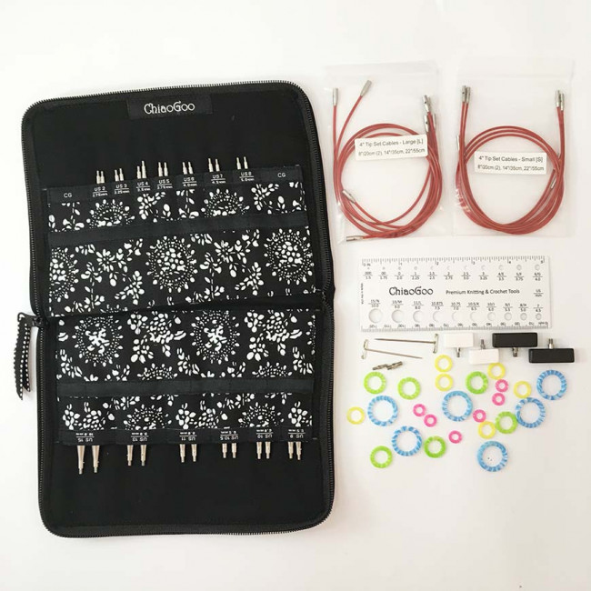
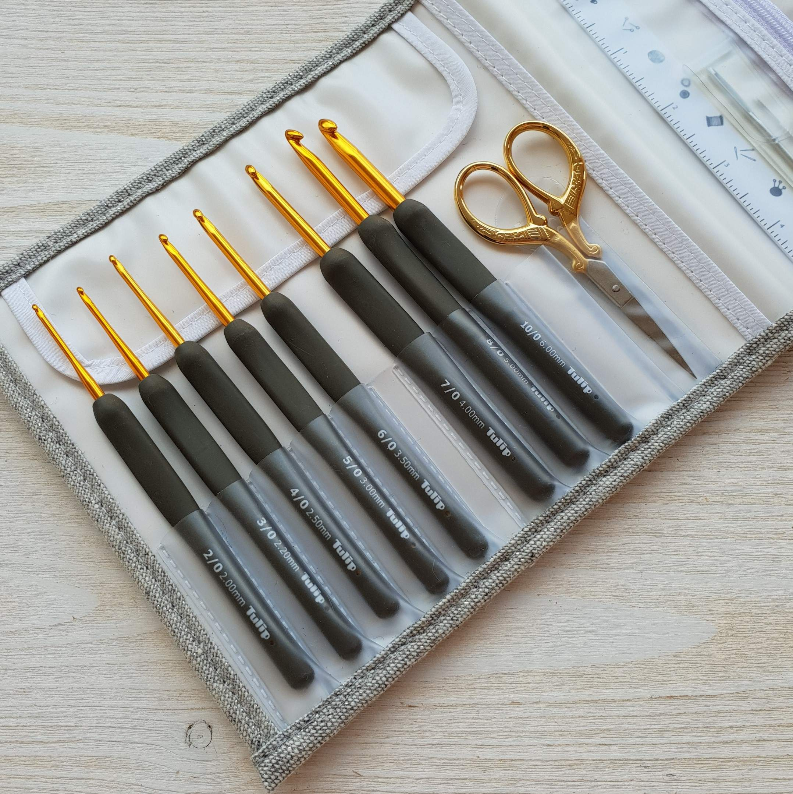
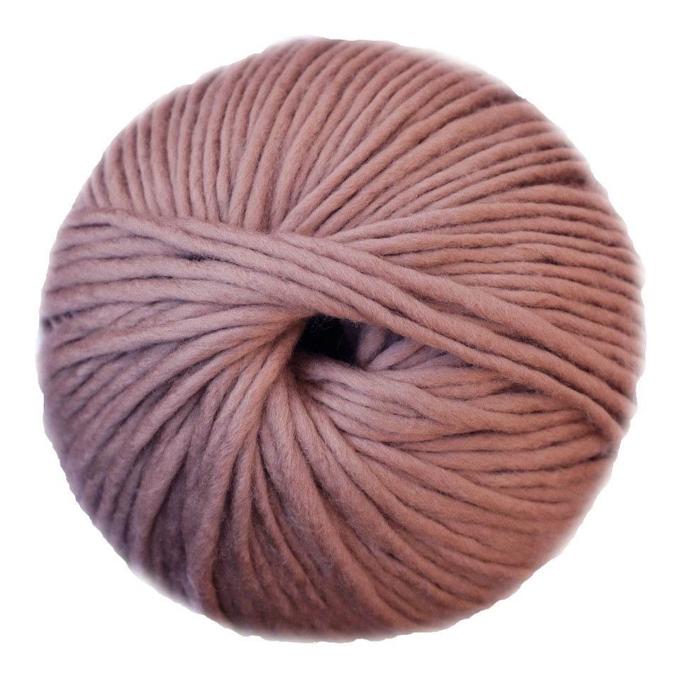
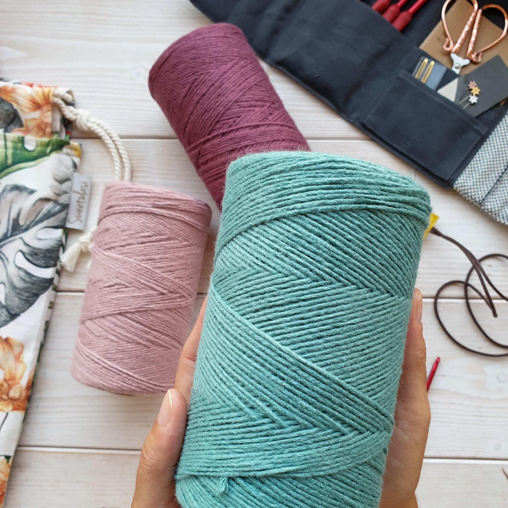
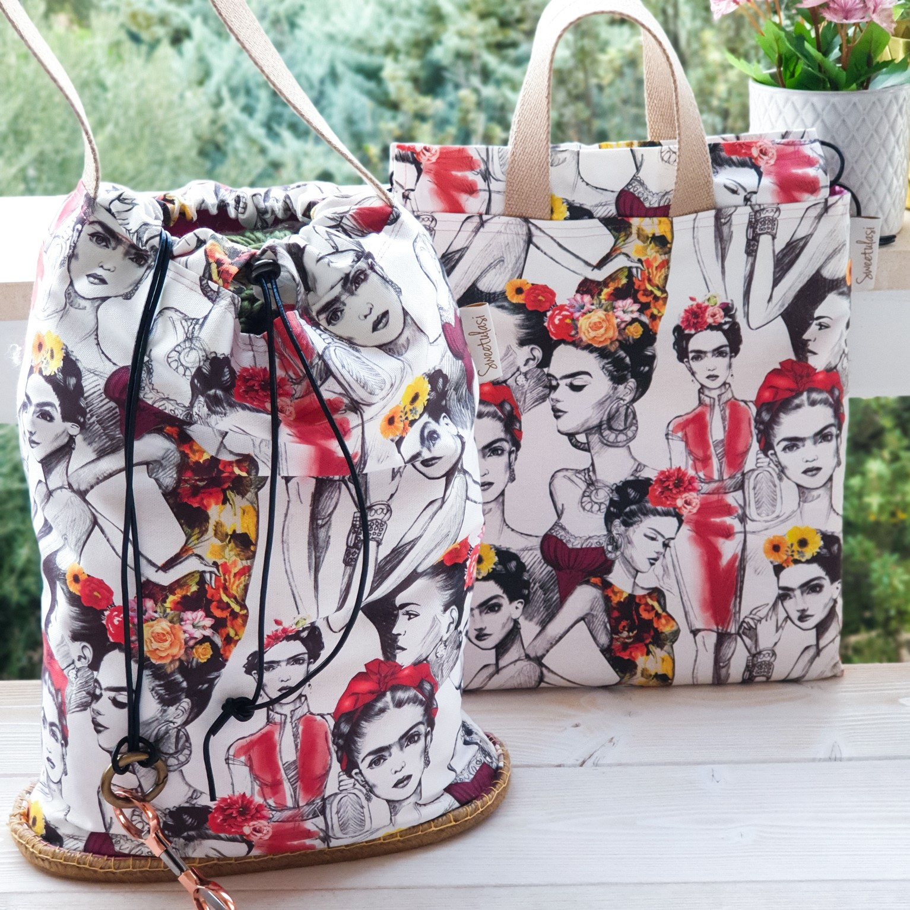
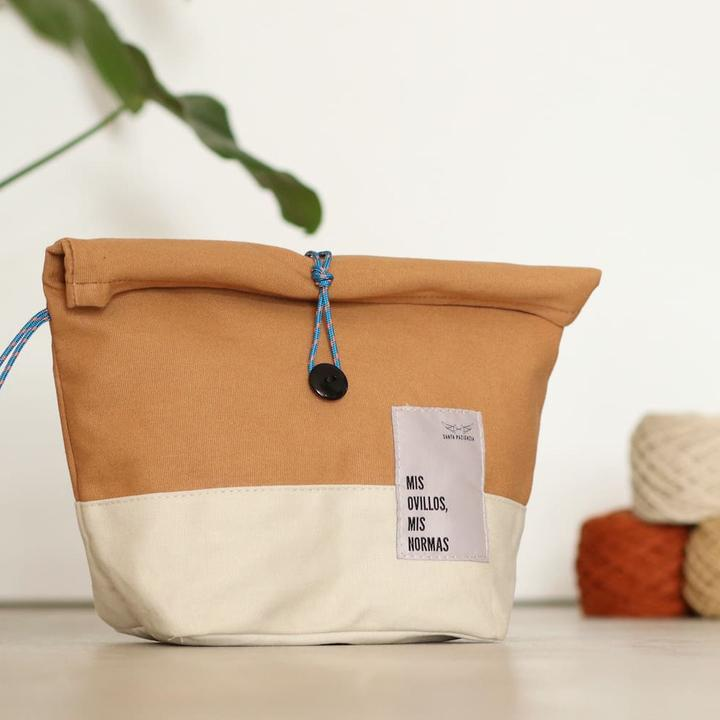
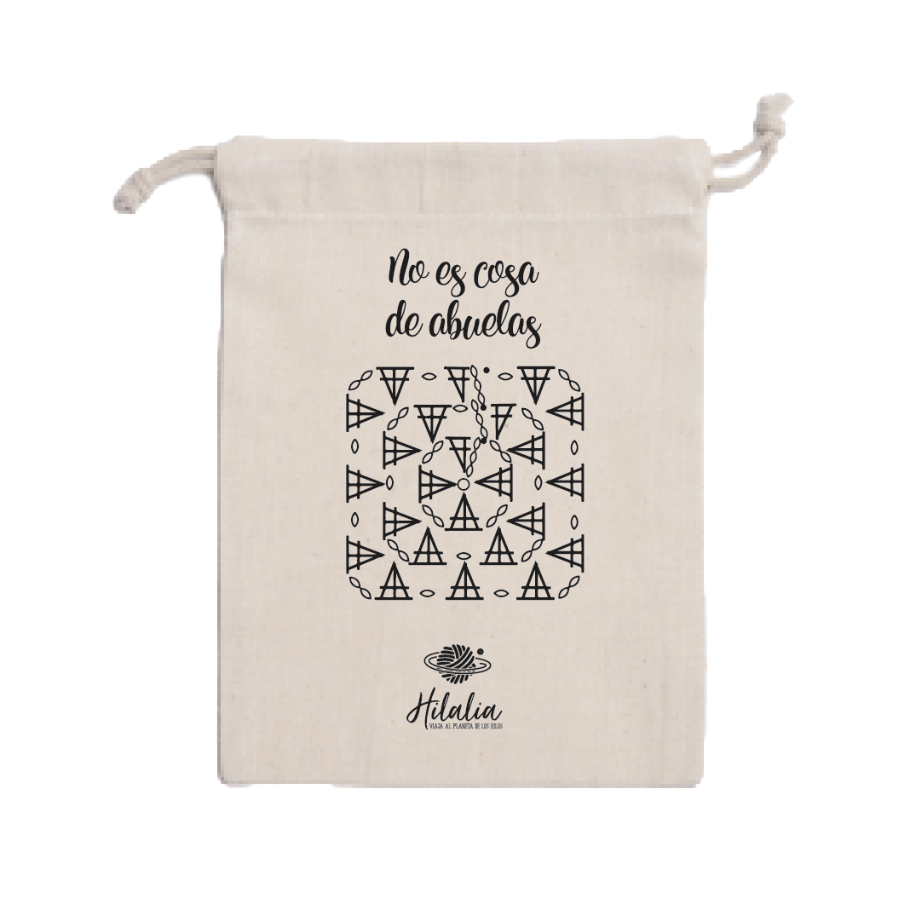

Materiales
Distintos tipos de materiales
Agujas
Hay diferentes tipos de agujas según la ténica que queras
utilizar.
Segun mi experiencia recomiendo la marca japonesa
Etimo para ganchillo o corchet.
Set de ganchillos Etimo Premium Gold de Tulip, un elegante kit que
contiene ocho agujas de ganchillo en color oro y gris, unas
tijeras, dos agujas laneras y una regla, todo organizado dentro de
un precioso estuche.

Y la marca Chiaogoo para tejer a dos agujas, también conocido como
punto.
ChiaoGoo es una marca de accesorios para tejer, tanto de
punto como de ganchillo. Fue creada por cuatro hermanos criados en
Linan, la capital del bambú de China y su nombre significa mujer
artesana altamente habilidosa, en honor a su madre.
Enlace de la imagen patrocinado

Marcadores de punto
Los marcadores son unos accesorios muy útiles
para marcar aumentos, disminuciones, cambios de puntos o vueltas
en tu labor, así como cualquier cambio a otra técnica diferente
que necesites recordar.
¿Cuando vas a usar marcadores?
Llega ese momento en el que tienes que empezar a marcar ciertos
puntos, o momentos (entre puntos), donde debes hacer algún aumento
o disminución, y según dónde, a veces es de un tipo o de otro.
A veces tienes que repetir un número específico de vueltas y es
más fácil si marcas esa primera o última vuelta de alguna manera.
Tejes dos calcetines a la vez y de repente algo te despista,
cuando vuelves a retomar la labor, no recuerdas cuál de los dos es
el primero que empezaste a tejer, ni por qué lado empezaste a
tejerlo
Con estos marcadores de puntos, para punto y ganchillo, tejer será
más fácil, no te perderás, no tendrás que estar tan pendiente de
contar constantemente puntos o vueltas. Algunos de ellos tienen un
mensaje claro, para identificar qué debes hacer concretamente y
otros puedes utilizarlos para marcar cosas más generales.
Algunos son, en principio, más específicos de punto ya que no
tiene un mosquetón y se colocan en las agujas de punto y los vas
deslizando de aguja mientras tejes cuando llegas a ellos. Pero
también hay marcadores con mosquetón, perfectos para enganchar en
los puntos de ganchillo, o en la vuelta que quieras. También para
saber cuál es el derecho y el revés de la labor.
Tijeras
Una tijera, denominada frecuentemente en su plural tijeras, es una
herramienta manual que sirve para cortar tela, papel, cabello,
etc. Está formada por dos cuchillas de acero que giran alrededor
de un tornillo axial común, respecto al cual se sitúan los filos
de corte a un lado y las agarraderas en el lado contrario. Las
agarraderas conllevan agujeros para sujetar y maniobrar con el
pulgar y el cordial. El mecanismo formado es un ejemplo típico de
palanca de primer orden, en la cual el punto de apoyo se sitúa
entre la resistencia (esfuerzo resistente) y la potencia (esfuerzo
motor). Las cuchillas se rozan una a la otra de tal forma que al
cerrarse no dejan espacio entre sí, cortando de esta forma el
objeto deseado.
Tijeras de bordar
Existen varios tipos de tijeras, cuyo diseño y prototipo depende
de la aplicación específica para la que se destinan, por ejemplo
en oficinas, cocina, costura, peluquería, enfermería,cirugíao
jardinería, incluso con varios tipos para cada oficio.
Aquí estan las tijeras que mas nos competen, las tijeras de bordar

Hilados
Hay tres tipos de hilo basados en su origen de las materias primas:
plantas, animales y sintético. Los hilos procedentes de plantas como
el algodón y el lino, su resistencia no es muy fuerte. Los
originarios de fibras animales son los de seda natural y lana de las
ovejas

La lana es una fibra natural que se obtiene de
los ovinos (caprinos y, principalmente, ovejas), y de otros animales
como llamas, alpacas, guanacos, vicuñas o conejos, mediante un
proceso denominado esquila. Se utiliza en la industria textil para
confeccionar productos tales como sacos, mantas, guantes,
calcetines, suéteres, etc.
Los productos de lana son utilizados en su mayoría en zonas frías
porque con su uso se mantiene el calor corporal; esto es debido a la
naturaleza de la fibra del material.
El algodón es una fibra textil vegetal que crece
alrededor de las semillas de la planta del algodón, un arbusto del
género Gossypium, pertenece a la familia de las malváceas,
originario de las regiones tropicales y subtropicales, hay
diferentes especies autóctonas en América, África o la India. La
palabra algodón deriva del árabe قُطْن (al) qutn.

La fibra sintética es una fibra textil que proviene
de diversos productos derivados del petróleo.
Las fibras artificiales no son sintéticos, pues estas proceden de
materiales naturales, básicamente celulosa. Algunas veces la
expresión «fibras químicas» se utiliza para referirse a las fibras
artificiales y a las sintéticas en conjunto, en contraposición a
fibras naturales.
Así, las fibras sintéticas son enteramente
químicas: tanto la síntesis de la materia prima como la fabricación
de la hebra o filamento son producto del ser humano. Con la
aparición y desarrollo de las fibras sintéticas la industria textil
ha conseguido hilos que satisfacen la demanda que plantean las
nuevas técnicas de tejeduría y los consumidores.
Un ejemplo de esta fibra sintética puede ser la veggie casasol, que
además es la única fibra que tenemos en la tienda que
es apta para veganos.

Bolsas de proyectos
Las bolsa de proyectos son bolsas para llevar nuestros proyectos de
punto y ganchillo hay muchas, pero bolsas que de verdad queramos
llevar y sacar fuera de casa.
Pero también se usan dentro de casa para tener orgnaizados todos los
proyectos que estas haciendo.
Principalmente estan realizadas de algodón y las hay de muchos
tipos. Podrás esncontrar hasta mochilas y bolsos que querrás llevar
hasta sin el proyecto dentro.
Puedes encontrarlas echas a mano, otras que te regalan en las
tiendas de lana, otras maás específicas con un orillo para sacar la
hebra mientras tejes... !Y muchas cosas mas!
Aquí te dejo una pequeña muestra de lo que puedes encontrar en el
mercado.


